Robustly Fit Naive Bayes Classifier
fit_nb.RdComputes the conditional a-posterior probabilities of a
categorical class variable given independent predictor
variables using the Bayes rule.
Parameter estimates are robustly calculated using approximations
of the error function for a Gaussian density, see helpr::fit_gauss().
Usage
fit_nb(x, ...)
# Default S3 method
fit_nb(x, y, mad = FALSE, laplace = 0, keep.data = FALSE, ...)
# S3 method for class 'formula'
fit_nb(formula, data, ...)
# S3 method for class 'tr_data'
fit_nb(x, ...)
# S3 method for class 'libml_nb'
print(x, ...)
# S3 method for class 'libml_nb'
predict(
object,
newdata,
type = c("raw", "class", "posterior"),
threshold = NULL,
...
)
# S3 method for class 'libml_nb'
plot(
x,
data,
features,
plot_type = c("pdf", "cdf", "log_odds"),
x_lab = "value",
id,
...
)
# S3 method for class 'naiveBayes'
plot(
x,
data,
features,
plot_type = c("pdf", "cdf", "log_odds"),
x_lab = "value",
id,
...
)Arguments
- x
A numeric matrix, a
tr_dataclass objects, or a data frame of predictors. If called from an S3 generic method (e.g.plot.libml_nb()) orprint.libml_nb()), either alibml_nbornaiveBayesobject.- ...
Additional arguments passed to the default
fit_nb()default method. Currently not used in thepredictorprintS3 methods, but is used in the S3 plot method, arguments passed toSomaPlotr::plotCDFlist()orSomaPlotr::plotPDFlist().- y
factor(n). If not passing a formula, a factor with true class names for each sample (row) inx.- mad
logical(1). Should non-parametric approximations be applied during the parameter estimation procedure. SeeDetails.- laplace
double(1). Positive controlling Laplace smoothing. The default (0) disables Laplace smoothing.- keep.data
Logical. Should the training data used to fit the model be included in the model object? When building thousands of models, this can become a memory issue and thus the default is
FALSE.- formula
A model formula of the form:
class ~ x1 + x2 + ...(no interactions).- data
A data frame of predictors (categorical and/or numeric), i.e. the data frame used to train the model.
- object
A
libml_nbmodel object.- newdata
A
data.framewith new predictors, containing at least the model covariates (possibly more columns than the training data). Note that the column names ofnewdataare matched against the training data.- type
character(1). Matched parameter. If"class", the class name with maximal posterior probability is returned for each sample, otherwise the conditional a-posterior probabilities for each class are returned. If called from the S3 plot method, a charactertypeis a string determining the plot type, currently either CDF or PDF (default).- threshold
numeric(1). Indicating the minimum probability a prediction can take.- features
An optional feature specifying which subset of model features to plot. If missing, all features are plotted.
- plot_type
character(1). A string determining the plot type, currently either a probability density function (PDF, default), CDF, or log-odds plots. Matched viamatch.arg().- x_lab
character(1). Optional label for the x-axis.- id
integer(n)orcharacter(n). Optional identifier of a specific sample to plot on top of either PDFs or CDFs. Either an index of the sample row in thedata, or itsrowname.
Value
libml_nb: A naive Bayes model with robustly fit parameters.
predict.libml_nb: depending on the type argument,
either the predicted class name or the posterior probability
of a robustly estimated naive Bayes model.
plot.libml_nb: A plot, either a list of
PDFs/CDFs, or a log-odds plot.
Details
When mad = TRUE (median absolute deviation), non-parametric
calculation of Bayes' parameters are estimated,
namely, mu = median(x) and sd = IQR(x) / 1.349.
That is, fit_gauss(..., mad = TRUE).
Methods (by class)
fit_nb(default): S3defaultmethod for fit_nb.fit_nb(formula): S3formulamethod for fit_nb.fit_nb(tr_data): S3tr_datamethod for fit_nb.
Functions
print(libml_nb): S3 print method forlibml_nb.predict(libml_nb): S3 predict method forlibml_nb.plot(libml_nb): S3 plot method forlibml_nb.plot(naiveBayes): Plot anaiveBayes(e1071) model object.
References
This function was heavily influenced by e1071::naiveBayes()
See David Meyer <email: David.Meyer@R-project.org>.
See also
plot_log_odds(), SomaPlotr::plotPDFlist(), SomaPlotr::plotCDFlist()
The fit*() family:
fit_gbm(),
fit_kknn(),
fit_logistic()
Examples
head(tr_iris)
#> ══ Training Data Object ═══════════════════════════════════════════════
#> • response Species
#> • class labels 'setosa', 'virginica'
#> • counts [50, 50]
#> • factor TRUE
#> • n 2
#> ───────────────────────────────────────────────────────────────────────
#> # A tibble: 6 × 5
#> Sepal.Length Sepal.Width Petal.Length Petal.Width Species
#> <dbl> <dbl> <dbl> <dbl> <fct>
#> 1 4.16 3.47 1.77 0.483 setosa
#> 2 7.25 3.85 5.47 2.16 virginica
#> 3 6.82 3.20 6.35 1.96 virginica
#> 4 6.81 2.33 5.44 1.25 virginica
#> 5 7.31 2.58 4.77 3.26 setosa
#> 6 5.72 2.83 2.26 -0.248 setosa
# standard naive Bayes
m1 <- e1071::naiveBayes(Species ~ ., data = tr_iris) # non-robust params
m2 <- fit_nb(Species ~ ., data = tr_iris) # formula syntax
m3 <- fit_nb(tr_iris) # tr_data syntax
m4 <- data.frame(tr_iris[, -5L]) |>
fit_nb(y = tr_iris$Species) # default syntax
# not same
identical(sapply(m1$tables, as.numeric), sapply(m2$tables, as.numeric))
#> [1] FALSE
# same
identical(sapply(m2$tables, as.numeric), sapply(m3$tables, as.numeric))
#> [1] TRUE
# Predictions
table(predict(m1, iris, type = "class"), iris$Species) # benchmark
#>
#> setosa versicolor virginica
#> setosa 50 2 0
#> virginica 0 48 50
table(predict(m2, iris, type = "class"), iris$Species) # approx same (Gaussian data)
#>
#> setosa versicolor virginica
#> setosa 50 3 0
#> virginica 0 47 50
# Plotting
plot(m2, tr_iris)
#> Warning: Non-positive values detected ...
#> If RFU data, possibly multi-logging?
#> [[1]]
#>
#> [[2]]
#>
#> [[3]]
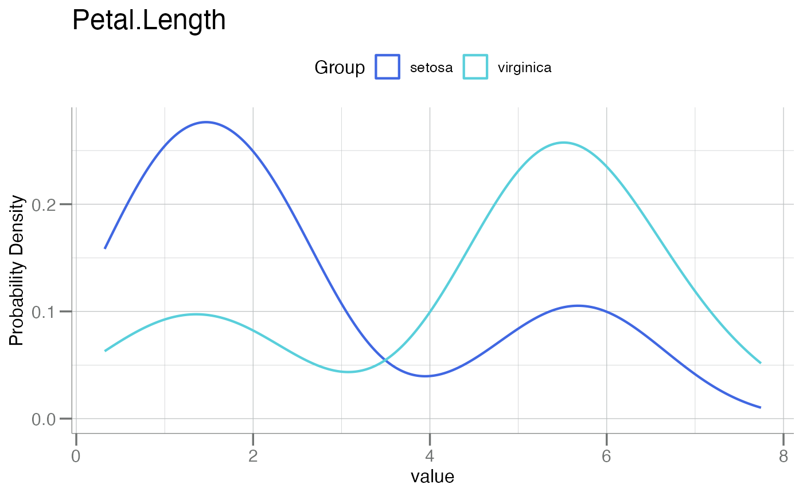
#>
#> [[4]]
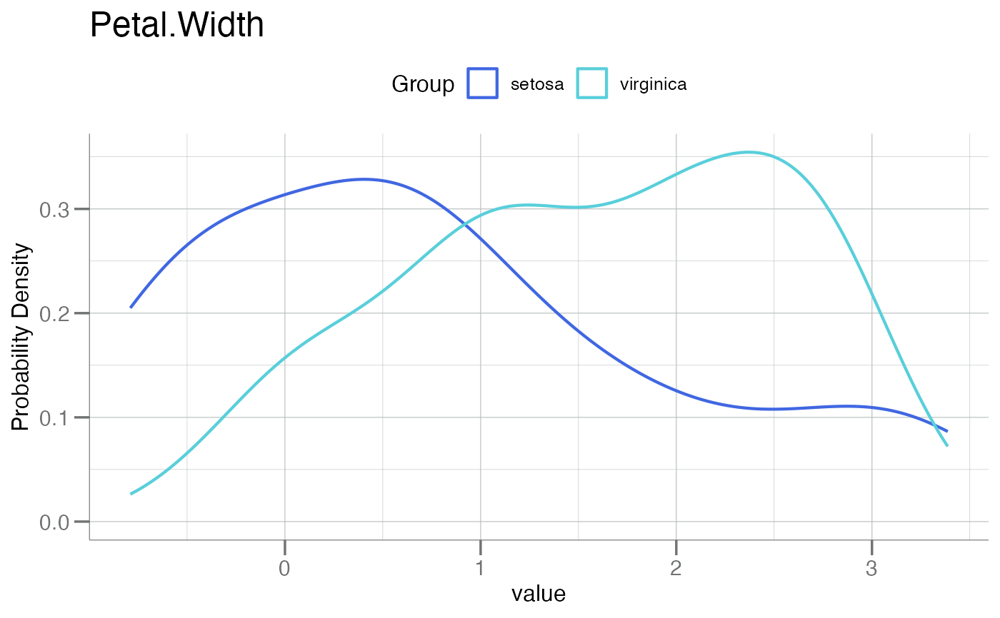
#>
plot(m2, tr_iris, id = 20) # sample 20 is definitely "virginica"
#> Warning: Non-positive values detected ...
#> If RFU data, possibly multi-logging?
#> [[1]]
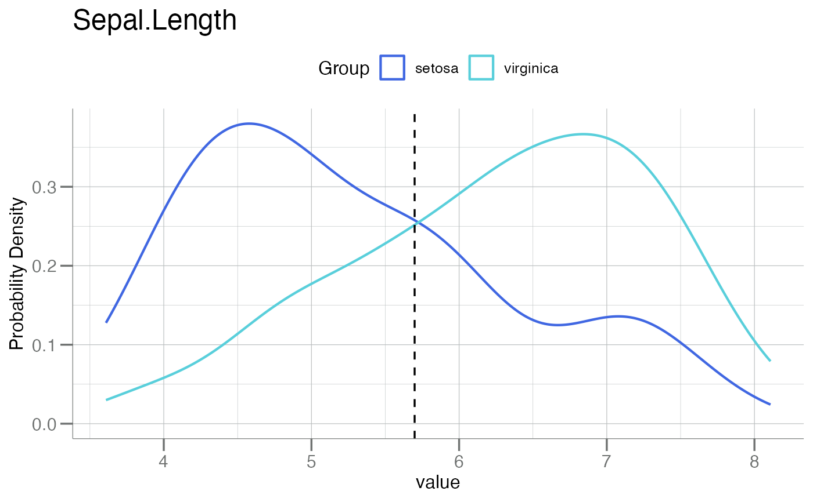
#>
#> [[2]]
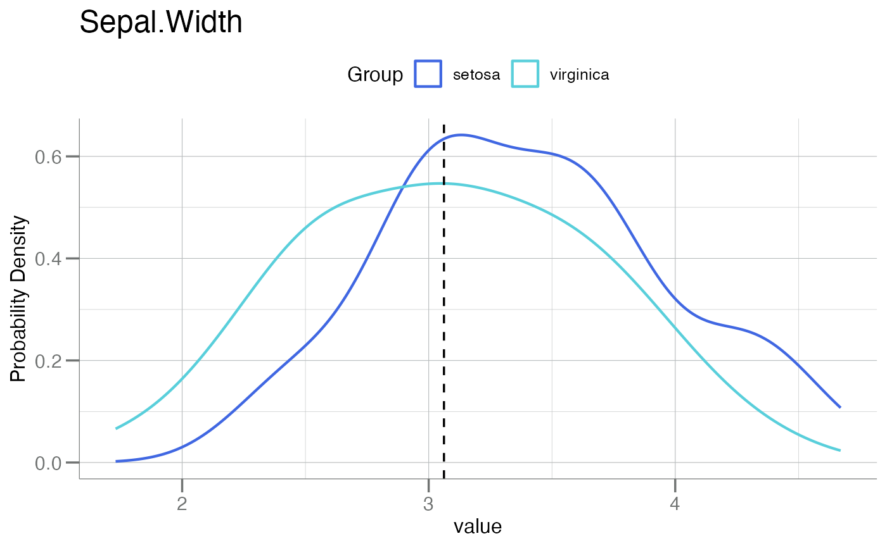
#>
#> [[3]]
#>
#> [[4]]
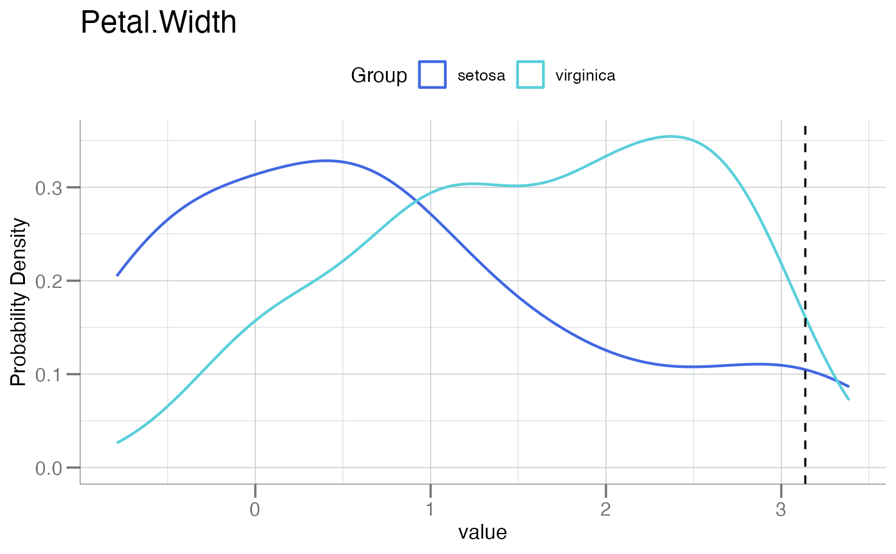
#>
plot(m1, tr_iris, plot_type = "cdf") # plot type CDF
#> Warning: Non-positive values detected ...
#> If RFU data, possibly multi-logging?
#> [[1]]
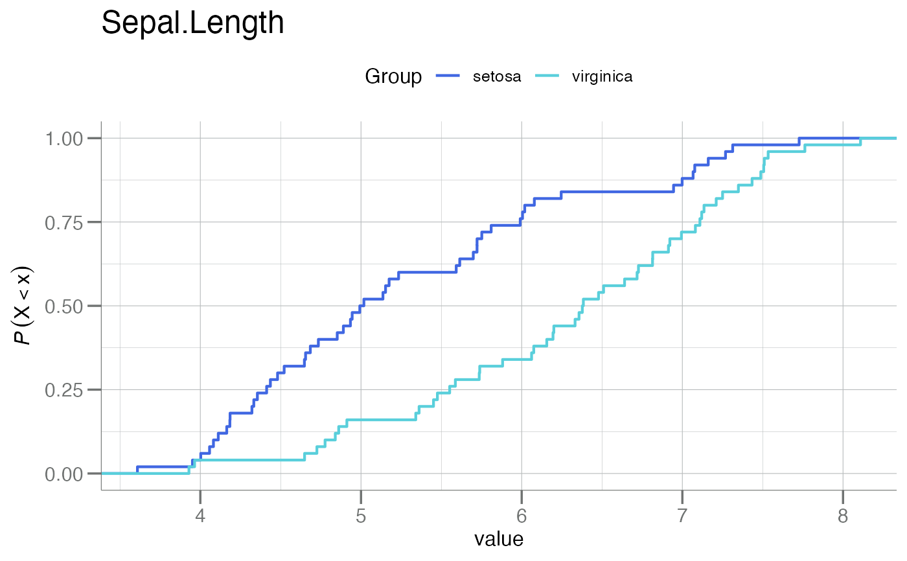
#>
#> [[2]]
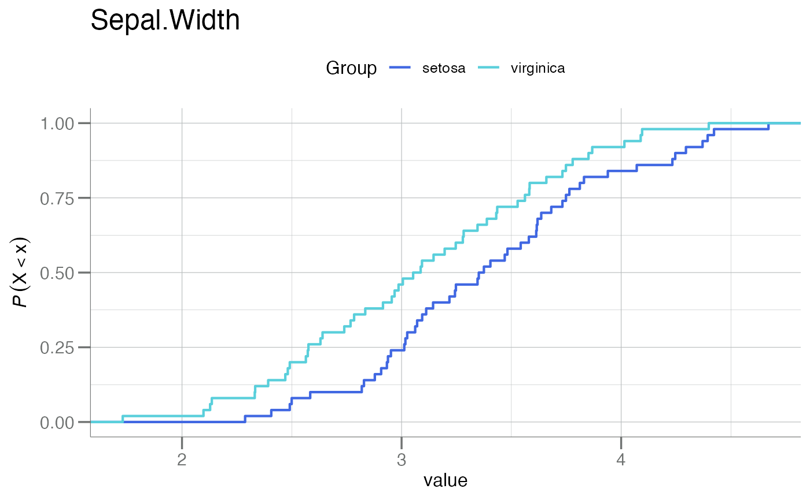
#>
#> [[3]]
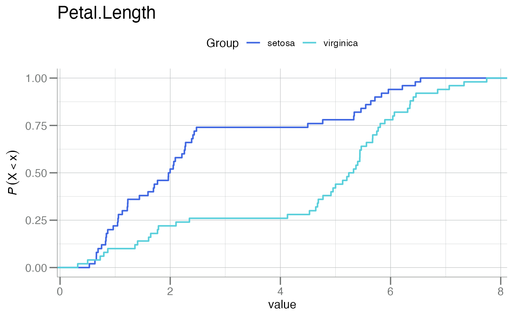
#>
#> [[4]]
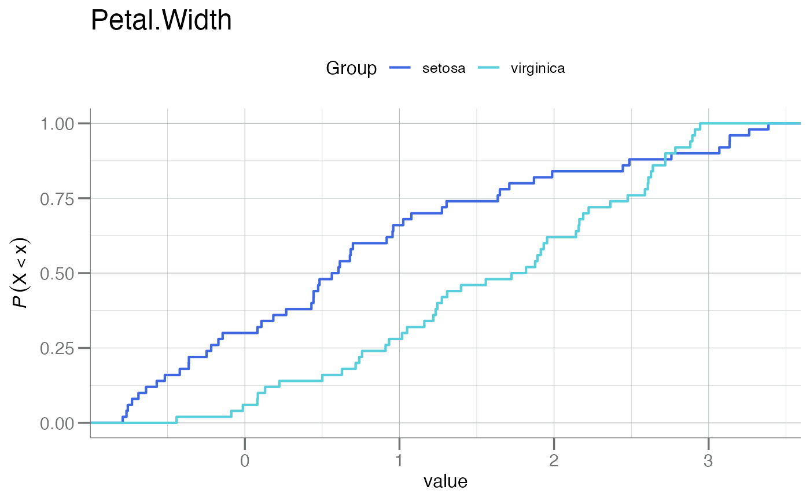
#>
plot(m2, tr_iris, features = "Sepal.Length", id = 70) # 1 feature
#> [[1]]
#>
plot(m1, tr_iris, plot_type = "cdf", lty = "longdash") # pass-through of lty
#> Warning: Non-positive values detected ...
#> If RFU data, possibly multi-logging?
#> [[1]]
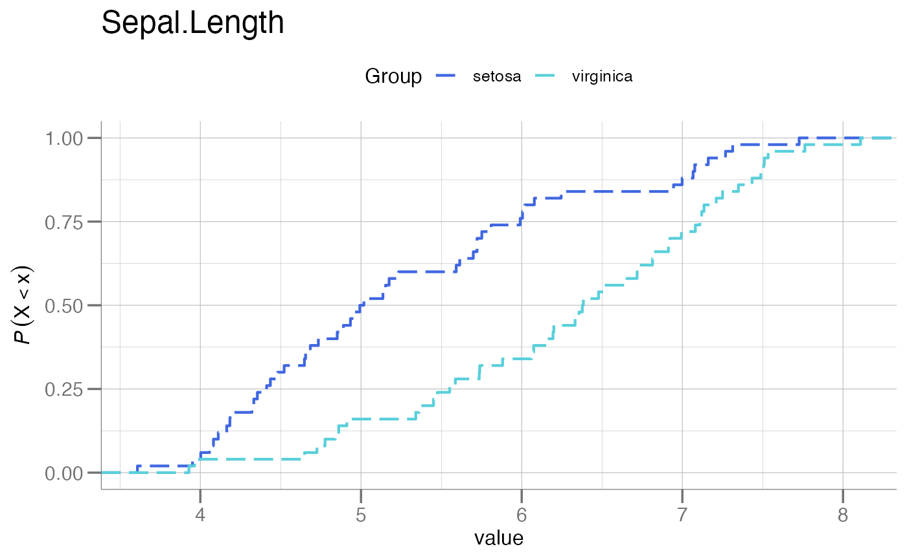
#>
#> [[2]]
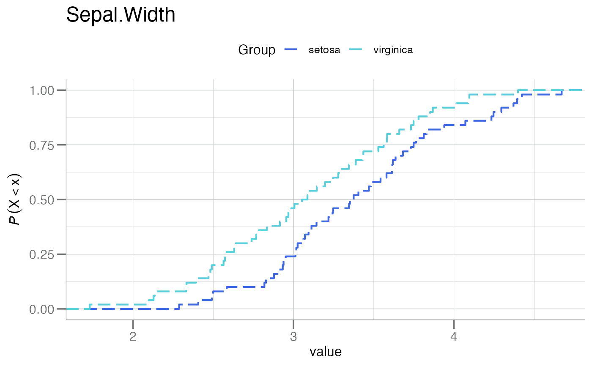
#>
#> [[3]]
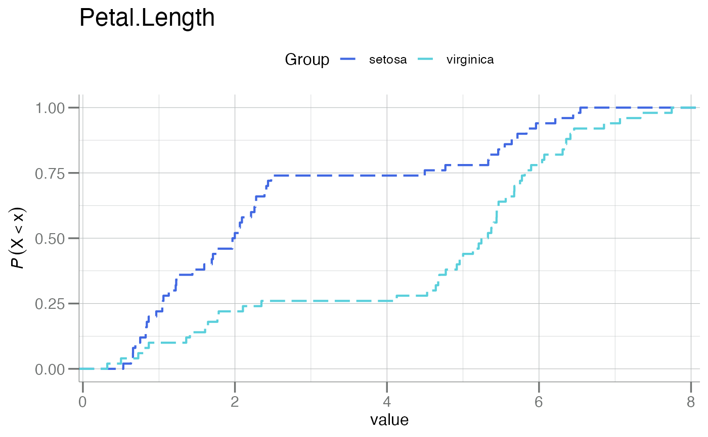
#>
#> [[4]]
#>